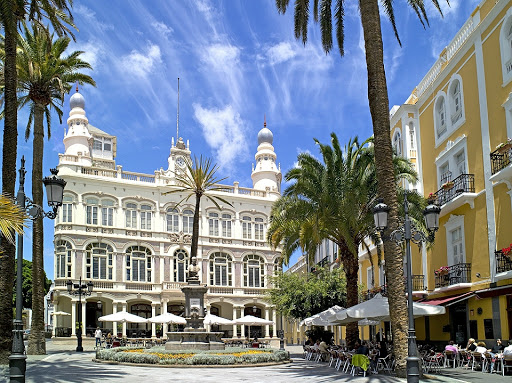

Literary Cabinet

The first theatre of Las Palmas was Caraisco Theatre, converted today into a MODERNIST building, called the
Gabinete Literario. It was inaugurated in 1843. Right now, It is a cultural institution whose objective is the creation
and diffusion of artistic manifestations and the management of cultural and social events. Two towers, crowned
by exotic domes, affirm the uniqueness of the building.The ornamentation of this facade is supported by
decorative surface pieces, specially inserted in the intermediate body. The current main facade is the result of a
project by architects Fernando Navarro and Rafael Massanet.